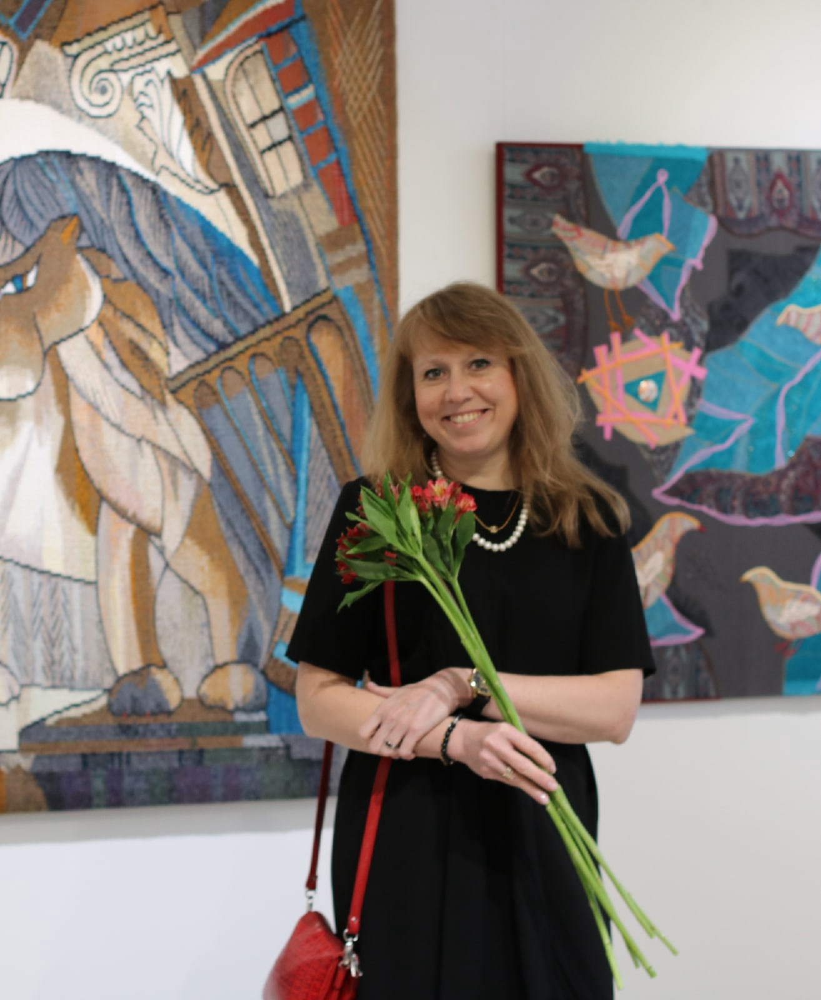

Художник декоративного искусства · мастер ручного ткачества
Анна Векслер
Член Союза художников России, Санкт-Петербургское отделение. Кандидат педагогических наук, профессор, заведующая кафедрой декоративного искусства и дизайна института художественного образования РГПУ им. А. И. Герцена, Санкт-Петербург.
Член Гильдии текстильщиков Санкт-Петербурга. Член Международного союза педагогов-художников. Иностранный эксперт Международного института искусств им. А. И. Герцена при Шаньдунском педагогическом университете (КНР). Директор Центра дизайна Открытого кампуса Герценовского университета.

Биография
- 1972Родилась в городе Ленинграде (ныне — Санкт-Петербург).
- 1991Окончила Ленинградское художественное училище им. В. А. Серова (ныне СПбХУ имени Н. К. Рериха), отделение скульптуры.
- 2000Окончила Санкт-Петербургскую государственную художественно-промышленную академию (бывшее ЛВХПУ им. В. И. Мухиной, ныне — СПГХПА им. А. Л. Штиглица), кафедру художественного текстиля.
- 2001Вступила в Союз художников России, Санкт-Петербургское отделение, секция декоративно-прикладного искусства.
- 2002Преподаёт в РГПУ им. А. И. Герцена; с 2020 года — заведующая кафедрой декоративного искусства и дизайна института художественного образования.
- 2008Организатор и куратор выставок учебных и творческих работ студентов РГПУ им. А. И. Герцена.
- 2011Защитила диссертацию на соискание учёной степени кандидата педагогических наук.
- 2012Преподаёт в Академии художеств имени Ильи Репина, ведёт авторский курс «Шпалера как вид монументального искусства» в мастерской монументальной живописи, которой руководит Академик РАХ, народный художник РФ, профессор А. К. Быстров.
- 2015Член жюри городских, региональных и международных выставок детского творчества. Проводит курсы повышения квалификации для педагогов дополнительного образования в области декоративного искусства.
- 2016Присвоено учёное звание доцента по специальности 13.00.02 «Теория и методика обучения и воспитания».
- 2018—2024Автор и руководитель дополнительной общеобразовательной программы «Материалы и техники изобразительного и декоративного искусства (практическая направленность)» в ГБОУ дополнительного образования детей «Ленинградский областной центр развития творчества одарённых детей и юношества „Интеллект“».
- 2025Присвоено учёное звание профессора по специальности 5.10.3. «Декоративно-прикладное искусство».
Участие в научных исследованиях, конкурсах, грантах
- Грант Президента Российской Федерации для поддержки творческих проектов общенационального значения в области культуры и искусства — распоряжение Президента Российской Федерации от 30.04.2020 № 116-рп. Реализован проект «Разработка и создание серии тактильных рельефных панно для инвалидов по зрению „Орнаменты Строгановского дворца“».
- «Дидактическая значимость орнамента как элемента содержания художественного образования, формирующего его уровни компетентности педагога-художника» (руководитель). Внутренние гранты РГПУ им. А. И. Герцена, 2023–2025.
- «Условия целостного освоения художественной культуры учащимися в рамках учебного предмета „Изобразительное искусство“ и в реализации авторских программ отделения дополнительного образования детей по ключевым модулям (народное и декоративно-прикладное искусство; живопись, графика и скульптура; архитектура и дизайн)» (исполнитель). Министерство просвещения РФ (государственное задание), 2025.
- Единый дизайн-код Герценовского университета в рамках новой кампусной и инфраструктурной политики национальных проектов «Наука и университеты» (2023–2030) и «Молодёжь и дети» (2025–2030). Исполнитель. Внутренние гранты РГПУ им. А. И. Герцена, 2025–2026.
- Разработка учебно-методического обеспечения для образовательной программы высшего образования — программа подготовки кадров высшей квалификации в ассистентуре-стажировке по специальности 54.09.03. Искусство дизайна (руководитель). Внутренние гранты РГПУ им. А. И. Герцена, 2025–2026.
Научно-исследовательская деятельность
Автор научных публикаций (более 100), учебных и учебно-методических пособий (15) и монографий (2).
Творческая и выставочная деятельность
С 1998 года А. К. Векслер ведёт активную творческую и выставочную деятельность: участник более 200 выставочных проектов, 15 персональных выставок, работает в технике традиционного ткачества (гобелен), экспериментирует с классическими и современными материалами (бумага, текстиль, эмаль), создаёт различные коллажи и арт-объекты.
Также является организатором выставок и выставок-конкурсов студентов и педагогов института художественного образования (более 50), в том числе — выставки в отделе Русского музея «Российский центр музейной педагогики и детского творчества» (2019, 2020 гг.), в Мурманском областном художественном музее (2024 г.); на различных городских площадках, в том числе — в Министерстве просвещения РФ (2025 г.).
Дипломы
- Диплом II степени в номинации 2D объект — «Остров сокровищ», I Международная Триеннале Мини-текстиля — Музей «Русский Левша», Санкт-Петербург, 2017.
- Диплом лауреата в номинации «Лучшее композиционное произведение» — «Творческая осень», III Международная выставка-конкурс художественно-преподавателей творческих направлений высших учебных заведений, СПбГУПТД, Санкт-Петербург, 2018.
- Диплом «Специальный» в номинации «Художественный текстиль» — «II Уральская триеннале декоративного искусства», Уральский культурный форум — Центральная, Екатеринбург, 2019.
- Диплом за содействие в развитии художественного текстиля — «Остров Сокровищ, Город», II Международная Триеннале мини-текстиля — Выставочный зал Иоанновского равелина, Петропавловская крепость, Санкт-Петербург, 2020.
- Диплом II степени в номинации «Декоративное искусство» — Всероссийская с международным участием выставка-конкурс творческих работ «Мир и война в искусстве», посвящённая 75-й годовщине победы в Великой Отечественной войне, РГПУ им. А. И. Герцена, Санкт-Петербург, 2020.
- Диплом I степени в номинации «Художественный текстиль, коллаж» — «Великий шелковый путь. Диалог культур», Четвёртый международный евразийский фестиваль, РГПУ им. А. И. Герцена, Санкт-Петербург, 2021.
- Диплом I степени в номинации «Текстиль» — «Российская неделя искусств» — Международная выставка-конкурс традиционного и современного искусства, Конгресс-холл «Амбер-плаза», Москва, 8–13 марта 2022.
- Диплом II степени в номинации «Текстиль» — «Российская неделя искусств» — Международная выставка-конкурс традиционного и современного искусства, Конгресс-холл «Амбер-плаза», Москва, 11–16 октября, 2022.
- Диплом I степени в номинации «Текстильный коллаж» на «III Уральской триеннале декоративного искусства», Уральский культурный форум — Центр дизайна, Екатеринбург, 2022.
- Диплом за лучшее креативное решение. Арт-объект «Подводные мифы» — «Текстильная книга художника» — Всероссийская выставка-конкурс в рамках II Международного фестиваля художественного текстиля «Созвездие», Выставочный зал Конюшенный корпус, Елагинский остров, Санкт-Петербург, 2023.
- Диплом I степени в номинации «Текстиль — ткачество» — «Санкт-Петербургская неделя искусств», Международная выставка-конкурс современного искусства. Выставочный центр Санкт-Петербургского союза художников, 31 октября — 5 ноября 2023.
- Гран-при за победу в номинации «Лучший гобелен» — «Творческая осень» — VIII Международная выставка-конкурс художников-преподавателей творческих направлений высших и средних профессиональных учебных заведений. СПбГУПТД, Санкт-Петербург, 2023.
Грамоты и благодарности
- Почетная грамота Учёного совета РГПУ им. А. И. Герцена «За многолетний добросовестный труд, большой вклад в подготовку высококвалифицированных специалистов», 2010.
- Почетная грамота Министерства просвещения Российской Федерации «За многолетний добросовестный труд и значительные заслуги в сфере образования», приказ Минпросвещения России от 13 декабря 2022 г. № 288/л.
- Благодарственное письмо Правительства Санкт-Петербурга Комитета по культуре Санкт-Петербурга «За активную работу в сфере культуры и искусства и большой личный вклад в развитие декоративно-художественного творчества», Санкт-Петербург, 2018.
- Благодарственное письмо Департамента культуры администрации городского округа Тольятти «За проведение семинара и мастер-классов для преподавателей и учащихся художественных отделений детских школ искусств», Тольятти, 2020.
- Благодарность Правительства Санкт-Петербурга Комитета по образованию «За значительный вклад в организацию и проведение Всероссийского образовательного форума с международным участием „Молодые молодым“», Санкт-Петербург, 2021.
- Благодарственное письмо Правительства Санкт-Петербурга Комитета по культуре Санкт-Петербурга «За высокий профессионализм и многолетнюю плодотворную деятельность в сфере культуры и искусства нашего города», Санкт-Петербург, 2021.
- Благодарственное письмо Администрации Кронштадтского района Санкт-Петербурга «За организацию выставки „Мой текст“, ставшей значимым событием в культурной жизни города, активную просветительскую и профориентационную деятельность», Санкт-Петербург, 2022.
Почетные звания и награды
- Нагрудный знак Санкт-Петербургского отделения Российского творческого Союза работников культуры «За служение культуре» от 17.10.2018 г.
- Почетный знак «Лучший педагог-художник 2021 года» № ЛП 2021–01.
- Медаль Московского отделения ВТОО «Союз художников России» «За развитие традиций» от 13 января 2023 г.
- Диплом Российской Академии художеств за создание произведений художественного текстиля (2023 г.), творческую и общественную деятельность и вклад в развитие декоративно-прикладного искусства от 09.04.2024 г.
- Почетный знак «Лучший педагог-художник 2025 года» № ЛП 2025–79.
Контакты
📧 —
📞 —
📍